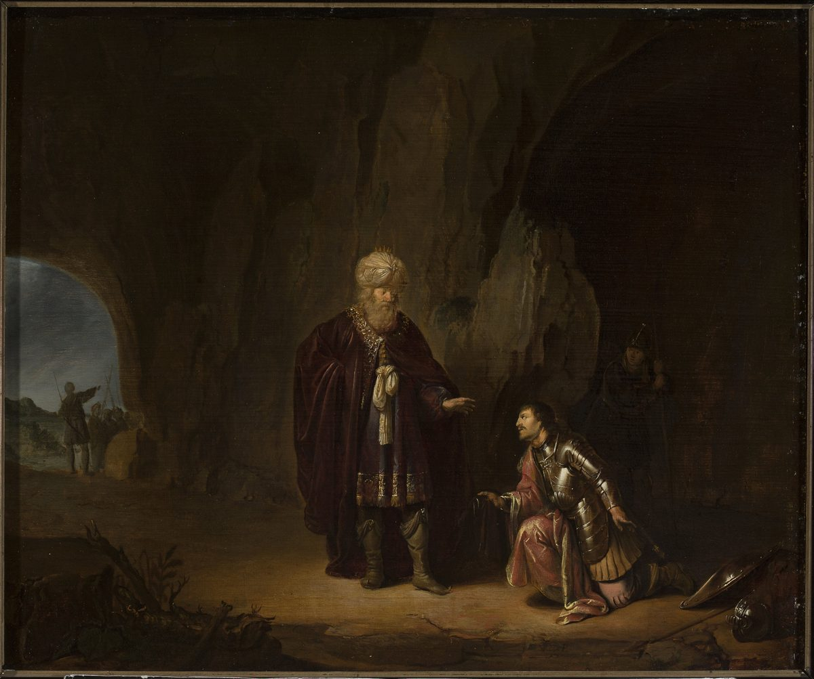

1 Samuel 24 — The Mister Translation

1 Samuel 24:4–17. The painter brings the two halves of the chapter into one place: David kneels before Saul inside the cave, his hand at the edge of the king’s robe, while the Hebrew has him cut the corner unseen and speak to Saul only after the king has gone out and David has called after him (verses 4 and 8). Soldiers wait outside the mouth of the cave, and David’s helmet and shield lie on the ground beside him.

Translator's Notes — verse by verse
Back from the Philistines. “When Saul returned from going after the Philistines”: me-acharei Pelishtim. The raid that called him away at the Crag of the Divisions (23:27–28, already on these pages) is over, and the chase begins again where the last chapter left David, in the strongholds of En-gedi (23:29) (En-gedi). The NIV has “After Saul returned from pursuing the Philistines”; the ASV “when Saul was returned from following the Philistines”; the TLB “After Saul’s return from his battle with the Philistines”. The Greek, the Latin, and the Geneva and Douay on the shelf number this verse 2, because they open the chapter with the last verse of chapter 23.
Three thousand chosen men. “And Saul took three thousand chosen men out of all Israel”: sheloshet alafim ish bachur. It is the size of the standing force Saul chose at the start of his reign, “three thousand men of Israel” (13:2, already on these pages), sent now against David’s six hundred (23:13). The same number goes down to the wilderness of Ziph in 26:2. The NWT 1984 has “three thousand chosen men out of all Israel”; the NIV “three thousand able young men from all Israel”; the TLB “three thousand special troops”.
The rocks of the wild goats. “On the face of the rocks of the wild goats”: tsurei ha-ye’elim. The ya’el is the wild goat of the cliffs, the ibex (ya’el), and the word is also a woman’s name: Jael, wife of Heber the Kenite (Judges 4:17, already on these pages) (Jael). Whether the phrase describes the country or names a place is not settled. The NIV prints it as a name, “near the Crags of the Wild Goats”; the KJV has “upon the rocks of the wild goats”; the NWT 1984 “upon the bare rocks of the mountain goats”; the Douay, following the Latin, expands it: “even upon the most craggy rocks, which are accessible only to wild goats”. The Greek takes it as a name and writes it Sadaiem.
The sheepfolds and the cave. “And he came to the sheepfolds by the road, and a cave was there”: gidrot ha-tson, pens walled in stone, the word of the Reubenites’ “We will build sheepfolds here for our livestock” (Numbers 32:16, already on these pages). It is David’s second cave, after the cave of Adullam (22:1, already on these pages). Two psalm headings put David in a cave: Psalm 57, “when he fled from Saul, in the cave”, and Psalm 142, “when he was in the cave”; neither heading names the cave. The NWT 1984 has “At length he came to the stone sheepfolds along the road, where a cave was”; the KJV “And he came to the sheepcotes by the way, where was a cave”; the NIV “He came to the sheep pens along the way”.
To cover his feet. “And Saul went in to cover his feet”: le-hasekh et-raglav, a polite way of saying that a man went aside to relieve himself. Eglon’s servants use it at the locked door of the upper room: “He must be covering his feet in the closet of the cool room” (Judges 3:24, already on these pages). The shelf divides over whether to keep the figure. The KJV and ASV keep it, “to cover his feet”; the NIV has “to relieve himself”; the NWT 1984 “to ease nature”; the Geneva “to do his easement”; the TLB “to go to the bathroom”. The Greek says only that he went in “to prepare himself”, and the Latin says it plainly. This translation keeps the Hebrew figure, because a reader who meets it here will know it again.
The innermost parts of the cave. “And David and his men were sitting in the innermost parts of the cave”: be-yarketei ha-me’arah. Yarkah is the thigh or flank, and then the far side or back of a place: Jonah “had gone down into the innermost part of the vessel” (Jonah 1:5, already on these pages). The men are “sitting”, yoshvim: they are already there when the king walks in. The NWT 1984 has “while David and his men were in the parts of the cave farthest back, sitting down”; the KJV “and David and his men remained in the sides of the cave”; the NIV “David and his men were far back in the cave”.
“The day of which Jehovah said to you.” David’s men quote a promise: “Look — I am giving your enemy into your hand, and you shall do to him as seems good in your eyes.” No word of Jehovah to David in those terms has stood in the book so far. The nearest is the answer at Keilah, “I am giving the Philistines into your hand” (23:4, already on these pages), with the same participle, noten, and different enemies. The men may be quoting a word the book does not record, or stretching the one it does; the text does not say. The consonants written in the verse spell “your enemies”, and the reading tradition says “your enemy”. The ASV has “Behold, I will deliver thine enemy into thy hand”; the NWT 1984 “Look! I am giving your enemy into your hand”; the TLB puts a name in the promise, “I will certainly put Saul into your power”, where the Hebrew has none.
The corner of the robe. “And David arose, and cut off the corner of the robe that was Saul’s”: kenaf ha-me’il (kanaf; me’il). Kanaf is a wing, and so the edge or corner of a garment: Ruth asks Boaz, “Spread your wing over your handmaid” (Ruth 3:9, already on these pages). The two words have met before. When Samuel turned to leave Saul, “he seized the corner of his robe, and it tore”, and Samuel answered, “Jehovah has torn the kingdom of Israel from you today, and has given it to a neighbour of yours who is better than you” (15:27–28, already on these pages). Then it was Saul who held a torn corner; now the corner is Saul’s, and David holds it. Jonathan had already given David his own robe (18:4, already on these pages). The NIV has “and cut off a corner of Saul’s robe”; the KJV “and cut off the skirt of Saul’s robe privily”; the NWT 1984 keeps the Hebrew’s “that belonged to Saul”: “and quietly cut off the skirt of the sleeveless coat that belonged to Saul”; the Douay “and secretly cut off the hem of Saul’s robe”. The Greek calls the piece a pterygion, a little wing.
Quietly. Ballat, quietly, without a sound (ballat). The word stands in four verses of the Hebrew Bible: Jael, the wild goat’s namesake, “went softly to him” with the tent peg (Judges 4:21); Ruth “came quietly, and uncovered his feet” (Ruth 3:7); Saul tells his servants, “Speak to David in secret” (18:22, all already on these pages); and here. Twice before, someone has come softly to a man lying down. The Geneva has “and cut off the lap of Saul’s garment privily”.
His heart struck him. “And it happened afterward that David’s heart struck him”: va-yakh lev-David oto, the verb of striking a man down. The same words come back when David has counted the people: “And David’s heart struck him after he had numbered the people” (2 Samuel 24:10). The narrator gives one reason, “because he had cut off the corner that was Saul’s”, and leaves the weight of it to the reader. It has been read as remorse for an act against the king himself, since the corner of a robe had already stood for the kingdom (15:27–28); and as shame at a small indignity done to Jehovah’s anointed, whatever its meaning. The KJV and ASV have “David’s heart smote him”; the NWT 1984 “David’s heart kept striking him”; the NIV “David was conscience-stricken”; the TLB “But then his conscience began bothering him.”
Far be it from me, by Jehovah. “Far be it from me, by Jehovah, that I should do this thing to my lord, to Jehovah’s anointed”: chalilah li me-YHVH (chalilah). With Jehovah’s name added, the formula stands in three verses of the Hebrew Bible: here; in 26:11, at the second sparing; and in Naboth’s answer to Ahab about his vineyard, “Far be it from me, by Jehovah, that I should give you the inheritance of my fathers” (1 Kings 21:3). Mi-YHVH is literally “from Jehovah”: the refusal is made on Jehovah’s account, almost an oath. The ASV has “Jehovah forbid that I should do this thing unto my lord, Jehovah’s anointed”; the NWT 1984 “It is unthinkable, on my part, from Jehovah’s standpoint, that I should do this thing to my lord”.
Jehovah’s anointed. Meshiach YHVH, twice in one sentence (mashiach). Samuel first called Saul “his anointed” when he put his own conduct to the people (12:3, already on these pages); David himself has since been anointed (16:13, already on these pages), and he will not lift his hand against the anointed king. “To stretch out my hand against him”: lishloach yadi bo, the phrase of the king’s servants at Nob, who “were not willing to stretch out their hand to fall upon the priests of Jehovah” (22:17, already on these pages). The TLB has “It is a serious sin to attack God’s chosen king in any way.”
He tore into his men. “And David tore into his men with these words”: va-yeshassa David et-anashav. Shissa is to tear apart (shasa): Samson “tore it apart as one tears apart a young goat” (Judges 14:6), and the priest tears a bird offering “open by its wings” (Leviticus 1:17, both already on these pages), the young goat, gedi, of En-gedi’s name, and the wing, kanaf, that David has just cut. The shelf softens the verb in many ways. The KJV has “So David stayed his servants with these words”; the ASV “So David checked his men with these words”; the NIV “With these words David sharply rebuked his men”; the NWT 1984 “Accordingly David dispersed his men with these words”; the Geneva “So David overcame his servants with these words”. The Latin has confregit, “broke”; the Greek has “persuaded”. This translation keeps the tearing.
My lord the king. “And David arose afterward, and went out of the cave, and called after Saul, saying: ‘My lord the king!’” He bows “with his face to the earth, and prostrated himself”: va-yiqqod appayim artsah va-yishtachu. The man anointed in Bethlehem bows to the man anointed before him, and calls him lord. The ASV has “David bowed with his face to the earth, and did obeisance”; the NWT 1984 “and David proceeded to bow low with his face to the earth and prostrate himself”; the TLB “David bowed low before him”.
Seeking your harm. “Why do you listen to the words of men who say, ‘Look — David is seeking your harm’?”: mevaqqesh ra’atekha. The verb is the chapter’s own: Saul went out in verse 2 “to seek David”, and he has been “seeking his life” since David asked Jonathan, “What is my iniquity, and what is my sin before your father, that he is seeking my life?” (20:1; 23:15, both already on these pages). David hands the verb back: it is said that he is the one seeking. The ASV has “Wherefore hearkenest thou to men’s words, saying, Behold, David seeketh thy hurt?”; the NIV “Why do you listen when men say, ‘David is bent on harming you’?”; the NWT 2013 “David is seeking to harm you”.
Someone said to kill you. “And someone said to kill you”: ve-amar le-hargekha, with no subject, “and one said”. The KJV and ASV have “and some bade me kill thee”; the NWT 1984 “and someone said to kill you”; the NIV “Some urged me to kill you”. The Douay, following the Latin, makes it David’s own thought: “and I had a thought to kill thee”. The Greek turns it the other way: “and I did not want to kill you”.
My eye spared you. “But [my eye] spared you”: va-tachas alekha, a feminine verb whose subject is not written. The law supplies it: “Your eye shall not spare them” (Deuteronomy 7:16, already on these pages) (chus), and this translation supplies it in brackets. The KJV and ASV have “but mine eye spared thee”; the Douay “but my eye hath spared thee”; the NIV “but I spared you”; the NWT 1984 “but I felt sorry for you”.
My father. “And, my father, see — yes, see the corner of your robe in my hand”: ve-avi. Saul is David’s father-in-law (18:27, already on these pages), and in verse 16 he answers, “my son David”. The piece of cloth is the evidence: “know and see that there is no evil or rebellion in my hand”, ra’ah va-fesha. Pesha is a breaking away, the word for a subject’s revolt against his lord. “And I have not sinned against you”: the question David put to Jonathan, “What is my sin before your father?” (20:1), answered in front of the father. The NWT 1984 has “there is no badness or revolt in my hand”; the KJV “there is neither evil nor transgression in mine hand”; the NIV “that I am guilty of wrongdoing or rebellion”.
Lying in wait. “And you are lying in wait for my life, to take it”: tsodeh et-nafshi (tsadah). The verb is rare, and it is the word of the asylum law: “But if he did not lie in wait, and God let him fall into his hand, then I will appoint you a place to which he may flee” (Exodus 21:13, already on these pages). The fugitive here is the one who has not lain in wait, and the king the one who has. The KJV has “yet thou huntest my soul to take it”; the NWT 1984 “while you are lying in wait for my soul to take it away”; the NIV “but you are hunting me down to take my life”; the Douay “but thou liest in wait for my life”. The Greek has “you are binding my life”.
Judge between me and you. “May Jehovah judge between me and you, and may Jehovah avenge me on you”: yishpot YHVH beini u-veinekha, Sarai’s words to Abram, “May Jehovah judge between me and you!” (Genesis 16:5, already on these pages). “Avenge me”, u-neqamani (naqam): the vengeance is asked of Jehovah, and David’s own part is a refusal, said twice in two verses, “but my hand shall not be against you”. The ASV has “Jehovah judge between me and thee, and Jehovah avenge me of thee; but my hand shall not be upon thee”; the NIV “but my hand will not touch you”; the TLB “Perhaps he will kill you for what you are trying to do to me, but I will never harm you.”
The proverb of the ancients. “As the proverb of the ancients says, ‘From the wicked comes forth wickedness’”: meshal ha-qadmoni (mashal). It is the second proverb in the book with Saul in it; the first was “Is Saul also among the prophets?” (10:12, already on these pages). How David means it is not spelled out. It can be read as: wicked deeds come from wicked men, so the hand that did not strike shows there is no wickedness in it; or as: wickedness will come out of the wicked man and bring its own end, so David need not lift his hand. The KJV has “Wickedness proceedeth from the wicked”; the ASV “Out of the wicked cometh forth wickedness”; the NIV “From evildoers come evil deeds”; the TLB “Wicked is as wicked does”.
A dead dog. “After whom has the king of Israel come out? After whom are you pursuing? After a dead dog — after a single flea.” Kelev met (kelev). Goliath asked David, “Am I a dog, that you come to me with sticks?” (17:43, already on these pages); now David names himself as less than a dog, a dead one. The figure will return in the mouth of Jonathan’s son before David, “such a dead dog as I am” (2 Samuel 9:8), and of Abishai about Shimei (2 Samuel 16:9). The KJV and ASV have “after a dead dog, after a flea”; the NIV asks it, “A dead dog? A flea?”; the NWT 1984 “After a dead dog? After a single flea?”; the TLB “one who is as worthless as a dead dog or a flea”.
A single flea. Par’osh echad (par’osh). The word stands in eight verses of the Hebrew Bible, and only two of them mean the insect: this one, and David’s second speech to Saul, “the king of Israel has come out to seek a single flea” (26:20). The other six are the family of Parosh in the lists of Ezra and Nehemiah (Ezra 2:3).
Jehovah as judge. “So may Jehovah be judge, and judge between me and you”: le-dayyan, a judge (dayyan), from din, the root of Rachel’s “God has judged me … therefore she named him Dan” (Genesis 30:6) and of “Dan shall judge his people” (Genesis 49:16, both already on these pages). “And plead my case”, ve-yarev et-rivi, the language of a lawsuit (riv). “And judge me free of your hand”: ve-yishpeteni mi-yadekha, “judge me out of your hand”, a verdict that is also a rescue. Shafat, to judge, stands three times between verse 12 and verse 15. The ASV has “and plead my cause, and deliver me out of thy hand”; the NIV “may he vindicate me by delivering me from your hand”; the NWT 1984 “and judge me [to free me] from your hand”, with the freeing in brackets. The Greek has “and judge for me out of your hand”.
“Is this your voice, my son David?” Ha-qolkha zeh beni David. It is the voice Saul asks about, as the blind Isaac weighed a son by his voice: “The voice is the voice of Jacob” (Genesis 27:22, already on these pages). Saul will ask the same question at the second sparing (26:17). “And Saul lifted up his voice, and wept”: va-yissa Sha’ul qolo va-yevk, as all the people at Gibeah “lifted up their voice and wept” when the news from Jabesh came (11:4, already on these pages). The ASV has “Is this thy voice, my son David? And Saul lifted up his voice, and wept”; the NIV “Is that your voice, David my son?”; the TLB “Is it really you, my son David?”
More righteous than I. “You are more righteous than I”: tsaddiq attah mimmeni. Judah said it of Tamar: “She is more righteous than I” (Genesis 38:26, already on these pages), and David is of Judah’s line through her son Perez (Ruth 4:18–22, already on these pages) (Tamar). Each time it is a man with power over the other who says it. “For you have repaid me with good, and I have repaid you with evil”: gamal, to deal out, to repay (gamal), the verb of Joseph’s brothers, afraid he would pay them back “for all the evil that we dealt him” (Genesis 50:15, already on these pages). The KJV has “Thou art more righteous than I: for thou hast rewarded me good, whereas I have rewarded thee evil”; the NWT 1984 “for it is you who have rendered me good, and it is I who have rendered you evil”; the TLB “You are a better man than I am, for you have repaid me good for evil.”
Jehovah handed me over. “That Jehovah handed me over into your hand”: siggerani YHVH be-yadekha (sagar). The root is the one of the last chapter’s question, “Will the lords of Keilah hand me over?” (23:11–12), and of Saul’s boast that David had “shut himself in” (23:7); this form is the one David used to Goliath, “This day Jehovah will hand you over into my hand” (17:46, all already on these pages). The Geneva keeps the shutting: “had closed me in thine hands”; the NWT 1984 has “in that Jehovah surrendered me into your hand”.
A good road. “For if a man finds his enemy, will he send him away on a good road?” The answer expected is no; David has. “So may Jehovah repay you with good”, yeshallemkha tovah, a second verb of repaying, the one of Joseph’s steward: “Why have you repaid evil for good?” (Genesis 44:4, already on these pages). The NWT 1984 has “will he send him away on a good road?”; the ASV “will he let him go well away?”; the NIV “does he let him get away unharmed?” The Greek adds that the man finds his enemy “in distress”.
Saul says it. “I know that you will surely be king”: malokh timlokh, the verb doubled. Jonathan had said, “you will be king over Israel … and Saul my father also knows it is so” (23:17, already on these pages); here Saul says it himself. “And that the kingdom of Israel will stand in your hand”: ve-qamah, the verb of Samuel’s sentence on Saul, “But now your kingdom shall not stand” (13:14), and of Saul’s warning to Jonathan, “you shall not be established, you or your kingdom” (20:31, both already on these pages), where the verb is a different one. The NIV has “and that the kingdom of Israel will be established in your hands”; the NWT 1984 “and that in your hand the kingdom of Israel will certainly endure”; the KJV “and that the kingdom of Israel shall be established in thine hand”.
Do not cut off my seed. “Swear to me by Jehovah that you will not cut off my seed after me”: im-takhrit et-zar’i, the causative of karat, the verb of the robe in verses 4, 5 and 11 (karat). David cut off a corner; Saul asks him not to cut off his line. Jonathan had asked the same: “And you shall not cut off your kindness from my house forever” (20:15, already on these pages). How the oath is kept is told later: David asks whether anyone is left of the house of Saul, to show him kindness “for Jonathan’s sake” (2 Samuel 9:1); and he spares Jonathan’s son “because of the oath of Jehovah that was between them”, while seven of Saul’s sons and grandsons are handed over to the Gibeonites (2 Samuel 21:7–9). The ASV has “that thou wilt not cut off my seed after me”; the NIV “that you will not kill off my descendants”; the NWT 2013 “that you will not wipe out my descendants after me”.
Up to the stronghold. “And Saul went to his house; and David and his men went up to the stronghold”: al-ha-metsudah (metsudah), the word of the stronghold where David stayed while his parents were in Moab (22:4–5, already on these pages). The oath is sworn, and David does not go home with the king. The KJV has “but David and his men gat them up unto the hold”; the NWT 1984 “they went up to the place difficult to approach”; the TLB “went back to their cave”. The Greek reads the word as a place name, Messara.
A second sparing. Chapter 26 tells a story with the same bones: the Ziphites, three thousand chosen men, a king in David’s power, “Jehovah’s anointed”, “Is this your voice, my son David?”, and a single flea (26:1–25). Readers have taken the two as two events, the second confirming the first, and as two tellings of one event kept side by side; the text gives no verdict.
Patterns worth carrying forward
Where this translation keeps the exact, distinct words: “going after” for me-acharei; “chosen men” for ish bachur; “the rocks of the wild goats” for tsurei ha-ye’elim, a description and not a name; “the sheepfolds” for gidrot ha-tson, as in Numbers 32:16; “to cover his feet” for le-hasekh et-raglav, as in Judges 3:24; “the innermost parts” for yarketei, as in Jonah 1:5; “I am giving” for the participle noten, as in 23:4; “the corner of the robe” for kenaf ha-me’il, as in 15:27; “that was Saul’s” for asher le-Sha’ul; “quietly” for ballat, as in Ruth 3:7; “his heart struck him” for va-yakh lev; “Far be it from me, by Jehovah” for chalilah li me-YHVH; “Jehovah’s anointed” for meshiach YHVH; “to stretch out my hand against” for shalach yad be-, as in 22:17; “tore into” for shissa, the verb of Judges 14:6 and Leviticus 1:17; “My lord the king”; “seeking your harm” for mevaqqesh ra’atekha; “[my eye] spared you” for va-tachas, as in Deuteronomy 7:16; “rebellion” for pesha; “lying in wait” for tsodeh, as in Exodus 21:13; “May Jehovah judge between me and you”, as in Genesis 16:5; “the proverb of the ancients” for meshal ha-qadmoni; “a dead dog” and “a single flea”; “judge” for dayyan; “plead my case” for yarev et-rivi; “judge me free of your hand” for yishpeteni mi-yadekha; “more righteous than I” for tsaddiq … mimmeni, as in Genesis 38:26; “repaid” for gamal, the verb of Genesis 50:15; “handed me over” for siggerani, as in 17:46; “repay” for shillem, as in Genesis 44:4; “surely be king” for malokh timlokh; “will stand” for qamah, as in 13:14; “cut off my seed” for takhrit et-zar’i, as in 20:15; and “the stronghold” for ha-metsudah, as in 22:4.
Echoes paid. The Crag of the Divisions and the strongholds of En-gedi (23:28–29); the rocks of the wild goats, the cave at En-gedi, and Saul’s “I know that you will surely be king”, promised in the last chapter; Saul’s three thousand (13:2); Jael, and her coming softly (Judges 4:17, 21); the Reubenites’ sheepfolds (Numbers 32:16); the cave of Adullam (22:1); Eglon behind the locked door (Judges 3:24); Jonah in the innermost part of the ship (Jonah 1:5); “I am giving the Philistines into your hand” (23:4); the corner of Samuel’s robe and the kingdom torn from Saul (15:27–28); Ruth’s “Spread your wing” and her coming quietly (Ruth 3:7, 9); Jonathan’s robe (18:4); “Speak to David in secret” (18:22); Jehovah’s anointed in Samuel’s mouth and David’s anointing (12:3; 16:13); the servants at Nob who would not stretch out their hand (22:17); Samson’s lion torn like a young goat and the bird torn by its wings (Judges 14:6; Leviticus 1:17); “What is my sin before your father?” and Saul seeking David’s life (20:1; 23:15); “Your eye shall not spare” (Deuteronomy 7:16); David the king’s son-in-law (18:27); the one who did not lie in wait (Exodus 21:13); Sarai’s “May Jehovah judge between me and you” (Genesis 16:5); “Is Saul also among the prophets?” (10:12); Goliath’s “Am I a dog?” (17:43); Rachel’s Dan and Jacob’s blessing of him (Genesis 30:6; 49:16); Isaac and the voice of Jacob (Genesis 27:22); the people weeping at Gibeah (11:4); Judah’s “She is more righteous than I” and the line of Perez (Genesis 38:26; Ruth 4:18–22); Joseph’s brothers and Joseph’s steward (Genesis 50:15; 44:4); “Will the lords of Keilah hand me over?”, “he has shut himself in”, and “This day Jehovah will hand you over into my hand” (23:7, 11–12; 17:46); Jonathan’s “you will be king over Israel” (23:17); “your kingdom shall not stand” and “you shall not be established” (13:14; 20:31); “you shall not cut off your kindness from my house” (20:15); and the stronghold (22:4–5).
Echoes planted. The second sparing at the hill of Hachilah: the three thousand chosen men, “Far be it from me, by Jehovah”, “Is this your voice, my son David?”, and the single flea (26:2, 11, 17, 20); the headings of Psalms 57 and 142; David’s heart striking him after the census (2 Samuel 24:10); Naboth’s refusal (1 Kings 21:3); the dead dog in the mouths of Jonathan’s son and of Abishai (2 Samuel 9:8; 16:9); the oath kept to Jonathan’s son and the seven handed to the Gibeonites (2 Samuel 9:1; 21:7–9); the wild goats of the crag (Job 39:1); and the family of Parosh (Ezra 2:3). None is translated here yet.
Next in this book: 1 Samuel 25 — Samuel’s death and burial at Ramah, Nabal of Maon shearing his sheep at Carmel, David’s messengers turned away, and Abigail riding out to meet him with bread, wine and cakes of figs.